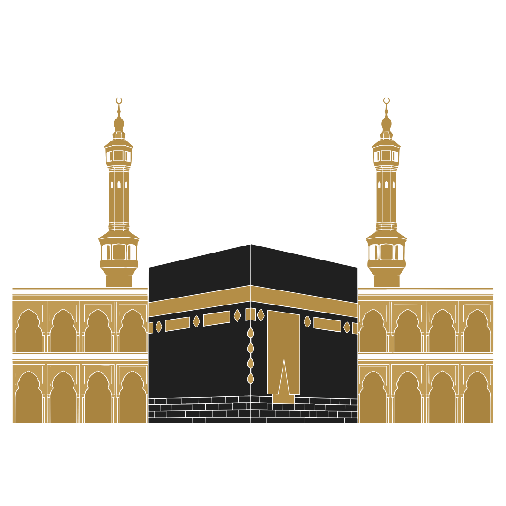

Islam
Historia de una tradición religiosa surgida en Arabia durante el siglo VII y de las sociedades y culturas que se desarrollaron posteriormente en el mundo islámico.
Los orígenes del islam
El islam surgió en la península arábiga durante el siglo VII d. C., en un contexto marcado por diferentes tradiciones religiosas, redes comerciales y relaciones entre las comunidades de Arabia y los grandes imperios de la región.
La nueva tradición religiosa se desarrolló alrededor de Muhammad, a quien la tradición islámica considera el último de una serie de profetas. Sus seguidores comenzaron a formar una comunidad religiosa que recibió el nombre de umma.
Durante las décadas siguientes, el islam se extendió desde Arabia hacia otras regiones de Oriente Próximo, el norte de África y Asia. Con el tiempo, esta expansión dio lugar a sociedades, instituciones y culturas muy diversas dentro del mundo islámico.
La Arabia del siglo VII
La península arábiga del siglo VII estaba habitada por diferentes grupos tribales y comunidades sedentarias. Las ciudades de La Meca y Medina eran importantes centros comerciales y sociales dentro de la región.
La sociedad árabe no constituía un Estado unificado. Existían alianzas, rivalidades y relaciones entre diferentes tribus, mientras las rutas comerciales conectaban Arabia con regiones como Siria, Mesopotamia, Palestina y el mar Rojo.
En Arabia coexistían distintas tradiciones religiosas, incluyendo cultos politeístas, comunidades judías y comunidades cristianas. Este contexto religioso y cultural formó parte del mundo en el que surgió el islam.
Muhammad y las primeras revelaciones
Según la tradición islámica, Muhammad comenzó a recibir revelaciones de Dios alrededor del año 610 d. C. mientras se encontraba en La Meca. Estas revelaciones fueron transmitidas a sus seguidores y posteriormente formarían parte del Corán.
Muhammad predicó la existencia de un único Dios y llamó a sus seguidores a abandonar los cultos politeístas. También enseñó principios relacionados con la justicia, la responsabilidad individual, la ayuda a los necesitados y la vida comunitaria.
Sus enseñanzas provocaron conflictos con sectores de la sociedad de La Meca. Con el crecimiento de sus seguidores, la comunidad enfrentó oposición y finalmente abandonó la ciudad para establecerse en Medina.
La Hégira y la comunidad de Medina
En el año 622 d. C., Muhammad y sus seguidores emigraron desde La Meca hacia Medina. Este acontecimiento, conocido como la Hégira, constituye el punto de partida del calendario islámico.
En Medina se desarrolló una comunidad religiosa y política que reunió a diferentes grupos. Muhammad asumió funciones de liderazgo religioso y también participó en la organización de las relaciones entre las comunidades de la ciudad.
Durante los años siguientes, la comunidad musulmana estableció alianzas y entró en conflictos con diferentes grupos de Arabia. Finalmente, Muhammad y sus seguidores regresaron a La Meca, que pasó a ocupar un lugar central dentro de la nueva comunidad islámica.
La expansión del islam
Después de la muerte de Muhammad en el año 632 d. C., la comunidad musulmana continuó expandiéndose. Los primeros califas dirigieron campañas que incorporaron grandes territorios de Arabia, Siria, Egipto, Mesopotamia y Persia.
Durante los siglos siguientes, el mundo islámico se extendió por el norte de África, la península ibérica, Asia central, India y otras regiones de Asia. La expansión se produjo mediante una combinación de conquistas, alianzas, comercio y procesos de conversión.
La expansión no produjo una sociedad uniforme. Las poblaciones incorporadas mantuvieron diferentes lenguas, tradiciones culturales y comunidades religiosas, que interactuaron con las nuevas instituciones islámicas.
El Corán y las primeras tradiciones
El Corán es el texto sagrado central del islam. Según la tradición musulmana, contiene las revelaciones que Dios transmitió a Muhammad y que fueron posteriormente recopiladas en forma escrita.
Junto al Corán se desarrolló la tradición de los hadices, relatos sobre las palabras y acciones de Muhammad. Estos textos adquirieron una importancia fundamental para la interpretación religiosa y jurídica del islam.
A partir de estas fuentes se desarrollaron diferentes escuelas de interpretación, pensamiento jurídico y teología. Estas tradiciones contribuyeron a la diversidad intelectual y religiosa del mundo islámico.
Los califatos y la organización del mundo islámico
Después de la muerte de Muhammad, los primeros líderes de la comunidad recibieron el título de califas. Los primeros cuatro son conocidos en la tradición suní como los califas bien guiados.
Posteriormente surgieron grandes dinastías, entre ellas los omeyas y los abasíes. El califato omeya estableció su capital en Damasco, mientras que el califato abasí trasladó el centro político a Bagdad.
Con el tiempo aparecieron diferentes Estados y dinastías musulmanas. Aunque compartían elementos religiosos, estas sociedades desarrollaron estructuras políticas, económicas y culturales propias.
La división entre suníes y chiíes
Una de las principales divisiones históricas del islam surgió a partir de las discusiones sobre el liderazgo de la comunidad musulmana después de la muerte de Muhammad.
Los suníes desarrollaron una tradición que reconocía la autoridad de los primeros califas y posteriormente de diferentes instituciones y escuelas jurídicas. Los chiíes defendieron la importancia de la descendencia de Muhammad a través de Ali y su familia como línea legítima de liderazgo religioso.
Con el paso de los siglos, ambas tradiciones desarrollaron sus propias instituciones, interpretaciones y comunidades. La división no fue solamente política, sino que también produjo diferencias religiosas y jurídicas.
El desarrollo de la civilización islámica
Entre los siglos VIII y XIII, diferentes regiones del mundo islámico experimentaron un importante desarrollo urbano, comercial, científico y cultural. Ciudades como Bagdad, Damasco, El Cairo, Córdoba y Samarkanda se convirtieron en centros de actividad intelectual y económica.
Los intercambios comerciales conectaron el Mediterráneo, África, Oriente Próximo, Asia central, India y China. Estas redes facilitaron la circulación de productos, conocimientos, tecnologías y textos.
La civilización islámica también incorporó conocimientos procedentes de tradiciones anteriores, incluyendo las culturas griega, persa, india y mesopotámica, que fueron traducidas, estudiadas y desarrolladas por distintos autores musulmanes y no musulmanes.
Ciencia, filosofía, medicina y conocimiento
Durante la Edad Media, científicos y pensadores de diferentes regiones del mundo islámico realizaron importantes trabajos en matemáticas, astronomía, medicina, filosofía y otras áreas del conocimiento.
En ciudades como Bagdad se desarrollaron instituciones dedicadas a la traducción y estudio de obras procedentes de las tradiciones griega, persa e india. Estos conocimientos fueron posteriormente ampliados por autores de diferentes regiones.
Entre las figuras destacadas se encuentran Al-Juarismi, relacionado con el desarrollo del álgebra, e Ibn Sina, cuyos trabajos médicos tuvieron una amplia influencia durante siglos.
El islam en África, Asia y Europa
El islam se extendió mucho más allá de Arabia mediante diferentes procesos históricos. En África, las rutas comerciales favorecieron su expansión hacia el Sahara y África occidental, mientras que en el este del continente surgieron comunidades musulmanas vinculadas al comercio del océano Índico.
En Asia, el islam llegó a Persia, Asia central, India, China y posteriormente al sudeste asiático. El comercio, las migraciones, las redes intelectuales y diferentes procesos políticos contribuyeron a su expansión.
En Europa, el islam se estableció especialmente en Al-Ándalus y en diferentes territorios del Mediterráneo y los Balcanes. Estas sociedades desarrollaron formas propias de cultura, arquitectura, ciencia y organización política.
Los grandes imperios islámicos
Después de la fragmentación de los primeros califatos surgieron numerosos Estados y dinastías musulmanas. Entre los más importantes estuvieron los seléucidas, mamelucos, otomanos, safávidas y mogoles.
Estos imperios controlaron territorios extensos y reunieron poblaciones de diferentes lenguas, culturas y tradiciones religiosas. Sus gobiernos desarrollaron sistemas administrativos y militares adaptados a sus respectivos territorios.
El Imperio otomano, establecido a finales del siglo XIII, se convirtió posteriormente en una de las principales potencias del mundo islámico y mantuvo su existencia hasta comienzos del siglo XX.
El islam en la Edad Moderna
Durante la Edad Moderna, los grandes Estados musulmanes mantuvieron relaciones comerciales, militares y diplomáticas con Europa, África y Asia. Los imperios otomano, safávida y mogol dominaron extensos territorios y desarrollaron importantes centros urbanos y culturales.
A partir del siglo XVIII, las potencias europeas incrementaron su presencia económica y política en diferentes regiones de mayoría musulmana. Durante los siglos XIX y XX, numerosos territorios quedaron bajo diferentes formas de dominio colonial europeo.
Estos procesos modificaron las estructuras políticas y económicas de muchas sociedades musulmanas y contribuyeron a la formación de los Estados modernos que surgirían posteriormente.
El islam contemporáneo
Durante los siglos XIX y XX, las sociedades musulmanas experimentaron importantes transformaciones relacionadas con la modernización, el colonialismo, la formación de nuevos Estados y los cambios económicos y sociales.
El islam continuó desarrollándose en diferentes regiones del mundo y surgieron diversos movimientos intelectuales, políticos y religiosos. Las comunidades musulmanas también establecieron nuevas instituciones educativas, culturales y religiosas.
Actualmente, el islam reúne comunidades muy diversas pertenecientes a diferentes tradiciones, entre ellas suníes y chiíes. Los musulmanes viven en prácticamente todas las regiones del mundo y mantienen una gran diversidad de lenguas, culturas y formas de práctica religiosa.